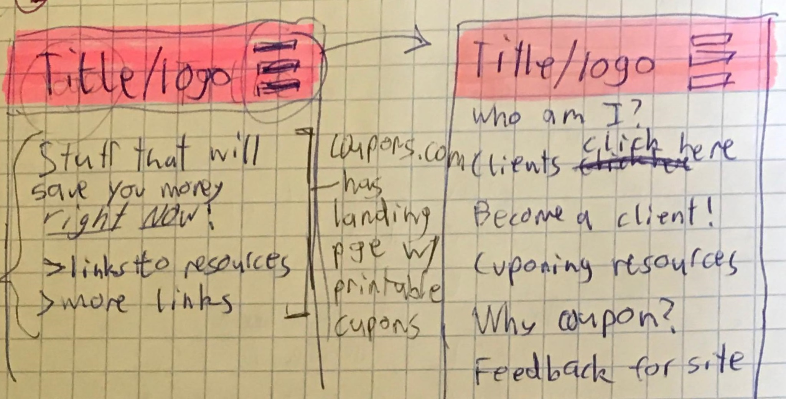
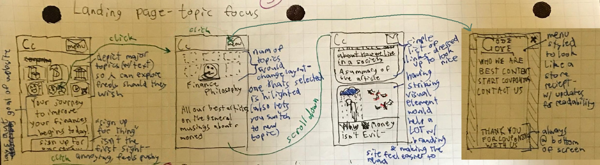

Cooling Clients
My client and I hit it off right away. Heck she would've never been my client if I wasn't as sociable as I am--three nights getting overtime ringing the same person up didn't hurt either.
When she and I finally got together outside of our day jobs to discuss the project, I discovered that I'd been making quite a few assumptions about what she wanted. The initial sketches I made illustrate this most clearly:
These are pretty basic designs, anyone who's ever accessed a website on their mobile device probably recognizes the layout. But look closely at the titles of the menu options--'Who am I?', 'Clients click here', 'Become a client!' When I first started the project I'd presumed that she had wanted to create a website to promote her personal business. As our (very interesting but often distracted) first conversation continued, her primary desires crystalized: anonymity, and community.
This... was a bit of an issue. Making a website to showcase a person's thoughts is one thing. But a site meant to be a community is a far more ambitious undertaking, espescially in a world where Twitter, Youtube, Facebook, and Wechat already fulfill that function. It's certianly possible--providing a better service than the multiple multi-billion dollar comapnies with hundreds of employees working around the clock isn't, technically, 'impossible'. ...but it won't happen. And my client not making content for the site herself wasn't helpful. After all, my client is a bubbly person with many fascinating things to say--our three hour overtime chats proved as such! Without original content like that for this site, what reason would anyone have to visit?
Over our next couple of meetings, I managed to meet her most important needs while still keeping her expectations realistic. This shift shows most strongly in the final wireframes:  The layout here isn't groundbreaking, which is a good thing--any website that aims for folks less familiar with technology should strive for maximum familiarity. In specific this is based off of "A Blog by Ryan Robinson" (his words), a blog dedicated to how-tos of online business, but with some aesthetic changes included for flavor. This layout includes all the best of what my client asked for, while showing the way I managed to bring some of her more lofty ambitions closer to Earth.
Like the earliest sketch, this layout has elements of my client's personality and interests--the message on the landing page and the menu show this most strongly. It's still personable, being in the first person, but I switched it to the plural instead, implying a whole team of writers. And even if my client is the only person making content for the site, using pseudonyms could easily reinforce this impression. It also incorporates my client's desire for a way for experienced couponers and newbie couponers to have access to content relevant to them right on the first page of the site. Having a list of six topics for new visitors to click is far easier to parse than, say, a word cloud of tags that one might find on a wordpress blog. Even so it still gives users options--allowing them to explore or search for something specific if that's what they want, or to click on a button for "our best stuff" to be taken to the creme of the website's content.
I'm also very proud of the aesthetic choice to stylize the website's menu as a store receipt since they're so key to the couponing hobby. That one just makes me smile.
Providing guidance for such a unique project proved to me that clients aren't nearly as unreasonable as years of horror stories had lead me to believe. Even if somebody doesn't fully understand what it is they're asking, it's possible to change their minds by making good designs and being honest.